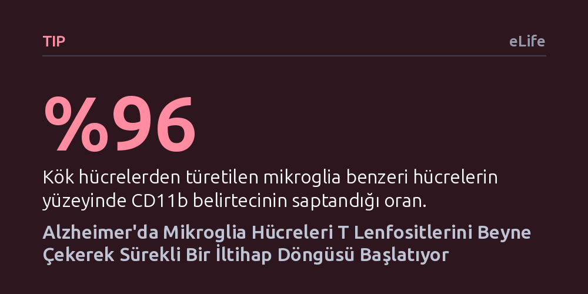

TIP · eLife · 2026-10-21
Araştırmacılar, laboratuvarda geliştirdikleri üç boyutlu insan ön beyin organoidinde amiloid-beta birikiminin bağışıklık hücrelerini nasıl etkilediğini inceledi. Amiloidi temizleyen mikrogliaların aynı zamanda ortama kimyasal sinyaller salarak T lenfositlerini dokuya çektiği ve iltihabı tırmandıran bir kısır döngü kurduğu bulundu.
Bulgu, Alzheimer'da beynin kendi bağışıklık hücrelerinin amiloidi temizlerken aynı zamanda kandan T hücrelerini çağırarak iltihabı kronikleştiren bir kısır döngü kurduğunu insan dokusu modelinde gösteriyor.

Alzheimer hastalığı denince akla genellikle beyinde biriken amiloid-beta plakları ve bu plakların nöronları doğrudan öldürmesi gelir. Ancak son yıllarda yapılan genetik ve hücresel araştırmalar, tablonun sadece nöron hasarından ibaret olmadığını, bağışıklık sisteminin de sürecin merkezinde yer aldığını gösteriyor. Beynin kendi savunma hücreleri olan mikroglialar bu birikintilere yanıt verirken, son klinik gözlemler kanda dolaşan ve uyarlanabilir bağışıklığın parçası olan T lenfositlerinin de Alzheimer hastalarının beyin dokusuna sızdığını ortaya koydu.
Ortadaki asıl düğüm, normalde kan-beyin bariyeriyle korunan merkezi sinir sistemine bu lenfositlerin nasıl ve neden çekildiğiydi. Fareler üzerinde yapılan deneyler T hücrelerinin hastalık bölgesinde toplandığını gösterse de, kemirgen bağışıklığı ile insan bağışıklığı arasındaki köklü biyolojik farklar bu bulguların insan için ne anlama geldiğini netleştiremiyordu. Standart iki boyutlu hücre kaplarında yapılan kültürler ise beyin dokusunun karmaşık üç boyutlu ağını yansıtmaktan uzaktı. Bilim insanları, amiloid birikiminin bu bağışıklık göçünü insan hücrelerinde nasıl tetiklediğini doğrudan gösterecek bir modele ihtiyaç duyuyordu.
Araştırma ekibi bu engeli aşmak için insan uyarılmış pluripotent kök hücrelerinden doksan gün boyunca ön beyin organoidleri geliştirdi. Organoid adı verilen bu yapılar, laboratuvar ortamında üç boyutlu olarak büyüyen ve gelişen insan beyninin katmanlı nöronal yapısını taklit eden canlı doku modelleridir. Araştırmacılar bu minyatür beyinleri 300 mikrometre kalınlığında ince dilimler halinde keserek hem dokunun üç boyutlu mimarisini korudu hem de mikroskop altında canlı canlı izlenebilecek melez bir platform kurdu.
Kurulan doku platformuna Alzheimer patolojisini başlatmak amacıyla sekiz gün boyunca amiloid-beta proteinleri verildi. Ardından sisteme adım adım diğer bağışıklık oyuncuları eklendi: Önce aynı kök hücre hattından üretilen olgun mikroglia hücreleri, ardından sağlıklı insan kanından elde edilen CD8+ T lenfositleri ortama dahil edildi. Böylece nöronlar, beynin yerleşik bağışıklık hücreleri ve kandan gelen akyuvarların bir arada bulunduğu üçlü bir insan nöroenflamasyon modeli elde edildi. Araştırmacılar tek hücre gen dizileme ve kalsiyum görüntüleme yöntemleriyle hücrelerin birbirine nasıl tepki verdiğini anbean kaydetti.
Deneyin ilk çarpıcı sonucu, amiloid-beta proteininin tek başına nöronlar üzerindeki etkisiydi. Amiloid ile karşılaşan nöronların olgunlaşma süreçleri yavaşladı, uyarıcı ve ketleyici sinaps dengeleri bozuldu ve hücreler kontrolsüz şekilde aşırı elektriksel aktivite sergilemeye başladı. Ortama mikroglialar eklendiğinde tablo ilk bakışta düzelmiş gibi göründü: Mikroglialar amiloid parçacıklarını hızla yutup temizledi ve nöronların aşırı uyarılmış halini normale döndürdü. Ancak bu temizliğin hücreler için ağır bir bedeli vardı.
Amiloidi yutan mikroglialar kronik olarak aşırı aktif bir iltihap durumuna geçti ve çevreye yoğun miktarda CCL4 ile CCL5 gibi kimyasal çekici sinyal molekülleri salgılamaya başladı. Kritik bulgu burada ortaya çıktı: Mikroglia bulunmayan ortamlarda CD8+ T hücreleri amiloidli beyin dokusuna hiç ilgi göstermezken, mikrogliaların bulunduğu dokuya hızla göç etti. Üstelik dokuya sızan T hücreleri mikrogliaların aktivitesini daha da körükledi. Böylece amiloidin başlattığı, mikroglianın T hücrelerini çağırdığı ve T hücrelerinin mikrogliaları daha da kışkırttığı kapalı bir iltihap kısır döngüsü oluştu.
Araştırmacılar bu yangını söndürmek için T hücrelerinin yüzeyindeki CCR5 ve CXCR3 almaçlarını bloke eden ilaçları test etti. Bu reseptörlerin engellenmesi T hücrelerinin organoide göçünü başarıyla durdurdu. Halihazırda başka hastalıklar için onaylanmış Maraviroc gibi CCR5 engelleyici ilaçların Alzheimer tedavisinde yeniden değerlendirilebileceği fikri bu noktada öne çıkıyor. Ancak veriler önemli bir uyarıyı da beraberinde getiriyor: Mikroglianın T hücrelerini çağıran iltihap sinyalleri kesilirken, amiloidi temizleyen ve nöronları koruyan hayati işlevlerine zarar verilmemesi gerekiyor.
Bu umut verici sonuçlara rağmen çalışmanın gerçek sınırlarını unutmamak gerekir. İncelenen organoidlerde kan damarları bulunmuyor ve model kandan gelebilecek diğer bağışıklık hücresi türlerinden yoksundur. Ayrıca deneyler tek bir kök hücre hattından türetilmiş olup gerçek insanlarda on yıllar boyunca gelişen karmaşık hastalık seyrini değil, laboratuvardaki akut ve hızlandırılmış bir etkiyi yansıtmaktadır. Yine de geliştirilen bu insan doku platformu, hayvan modellerinde görülemeyen hücresel etkileşimleri aydınlatmak ve doğrudan insan bağışıklığına yönelik hedefe odaklı tedaviler tasarlamak için değerli bir zemin sunmaktadır.